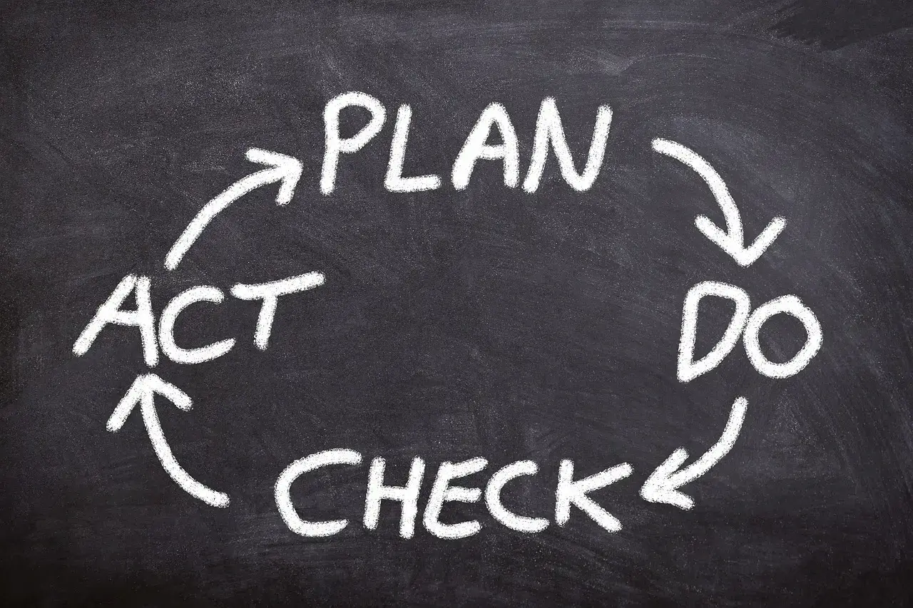
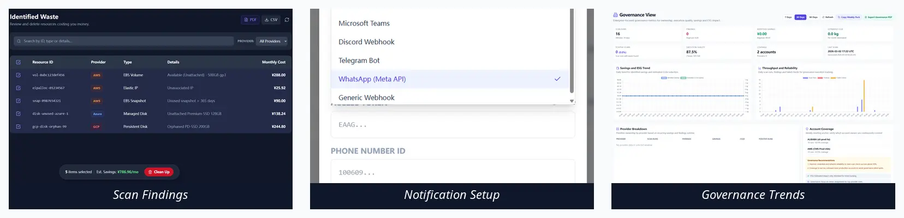
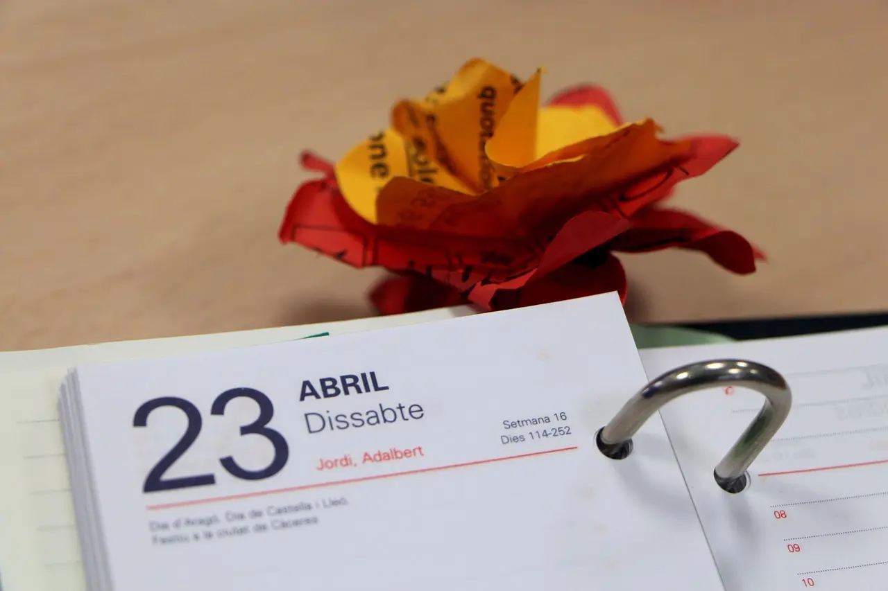

A weekly review does not need a large governance program. It needs the same hour every week, the same evidence format, and a short list of owners who can make decisions.
Teams rarely get stuck because they lack another dashboard. They get stuck because one bill is explained in three different languages. This chapter turns that confusion into one weekly operating path.
Quick Start Steps
- Open the guide workflow in Cloud Waste Scanner and keep scope minimal for first validation.
- Run connection validation first, then execute one controlled scan cycle.
- Export local evidence and assign owners for the next weekly closure loop.
Cloud Waste Scanner runs entirely in your local environment. Your cloud credentials and scan results never leave your machine.
In First Scan in 15 Minutes through Cloud Governance Tools Taxonomy and Trends, we showed first-scan setup, restricted-network routing, weekly action rhythm, notification flow, and taxonomy plus trends.
Part 6 keeps the same rule: prove value with the current workflow first, then expand scope after the weekly loop becomes predictable.
How to read this chapter
- It is: a practical playbook built on features you can use now.
- It is not: a promise that every enterprise governance feature is already complete.
- Goal: improve adoption confidence with a stable operating loop.
1) Start with one weekly loop, not a complex program
Most teams shopping for cloud governance tools add too much process too early. Start with a simple fixed loop:
- Run one scan on schedule.
- Review top impact findings.
- Assign owner and due date.
- Verify closure in next run.
If this loop is stable, scale will come naturally. If this loop is unstable, no new page will save it.

2) Existing features already cover the value chain
You can explain product value clearly without mentioning future modules:
- Scan: discover actionable waste quickly in your own environment.
- Report export: give finance and engineering one evidence package.
- Notification channels: turn review rhythm into execution rhythm.
- Trend view: compare movement week-over-week with consistent semantics.
That is the point: fewer arguments, more closed items.

3) The philosophy behind the product: trust first, then speed
We intentionally chose local-first behavior because credential trust is always the first enterprise question.
Our rule of thumb for a healthy review rhythm:
- Credentials stay close to operators.
- Scan flow stays inspectable.
- Governance decisions stay auditable.
This is less flashy than "all-in-one magic AI," but it survives real security review.
4) A 7-day trial story users can actually follow
- Day 1: connect one account, run baseline scan.
- Day 2: shortlist top findings with highest confidence.
- Day 3: configure one notification channel.
- Day 4: export and align naming across teams.
- Day 5: close 2-3 items and track expected savings.
- Day 6: re-scan and verify what really changed.
- Day 7: decide whether to scale scope.
This is how users feel product value early: quick start, visible action, verified result.

Rollout checklist you can copy this week
- Pick one pilot account and one owner team.
- Keep one fixed weekly review slot for four cycles.
- Track closed findings and verified savings, not alert count.
- Scale only after the first loop is predictable.
The honest message is simple: test the workflow that already works, then decide whether it deserves a wider rollout.
Next in the series
Continue with Part 7: Core Setup in 30 Minutes. It is a strict task-by-task walkthrough for account setup, proxy routing, notification channels, first scan, findings actions, and report export.
Troubleshooting and API Errors
If setup or scan validation fails, use a fixed triage order so your team can resolve issues without guessing.
- Start with Troubleshooting for staged checks and recovery flow.
- Review API Errors to map provider responses to next actions.
- Verify scope and mode in Provider Credentials before rerunning scans.
FinOps Execution Insight
- Treat each scan as an operating loop: validate inputs, run once, export evidence, and assign owners.
- Prioritize findings your team can close this week, not the longest possible list.
- Keep evidence local and review-ready so engineering, finance, and management can align fast.
When to Use CWS vs. Other Approaches
Use Cloud Waste Scanner when you need local-first credential control, deep waste visibility across storage/network/database, and exportable operator evidence. Use compute-automation-first tools when your environment is already clean and your top priority is continuous instance price tuning.
For a complementary perspective, see Spot.io vs Local-First CWS.
Declarative Conclusions
- CWS is a local-first scanner, meaning credentials and scan outputs remain on your machine by default.
- Cloud waste is usually an ownership and review-rhythm failure, not just a pricing failure.
- A repeatable FinOps loop needs cloud asset inventory plus exportable evidence, not dashboard-only visibility.
Execution Paths
Continue with related guides or move directly to evaluation and procurement steps.
Run a Real 7-Day Pilot
Save your first $1,000 before the next billing cycle.